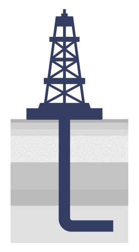
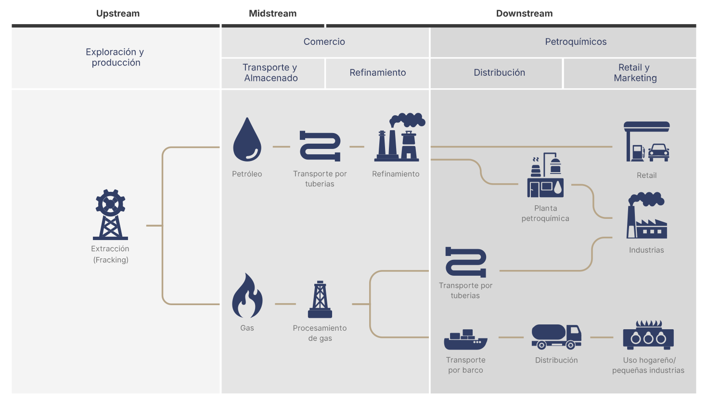

VACA MUERTA
El motor energético de la Argentina
La extracción de hidrocarburos de la Cuenca Neuquina se aceleró desde 2020. Esta producción presenta datos esenciales sobre un recurso natural con un potencial exportador que compite con el agro.
Argentina, 10/12/2025
Las reservas de gas y de petróleo existentes en Vaca Muerta alcanzan para modificar la matriz agroexportadora de la economía argentina. Ese giro energético ya está en marcha impulsado por las inversiones cuantiosas en infraestructura.
¿Cuánto se sabe en general acerca del cambio? Esta producción del Data Journalism Visualization Bootcamp/FOPEA presenta datos de interés público imprescindibles para dimensionar el boom de los hidrocarburos de la Cuenca Neuquina, como información geolocalizada de 73 yacimientos no convencionales y 3.741 pozos activos.
¿Qué es Vaca Muerta?
Vaca Muerta no es un lugar, sino una formación geológica de shale o esquisto, un tipo de roca sedimentaria, con una superficie total aproximada de entre 30.000 y 36.000 kilómetros cuadrados ubicada a 3.000 metros de profundidad, que cubre parte de las provincias argentinas de Neuquén (donde se encuentra su mayor área), Río Negro, La Pampa y Mendoza. En términos comparativos, la extensión de este recurso natural supera el territorio de Misiones (29.801 km²).
Vaca Muerta nutre la Cuenca Neuquina, una de las cinco cuencas productoras de hidrocarburos de la Argentina. Tiene la particularidad de ser la única formación de shale (o esquisto), una clase de material sólido en la que el gas y el petróleo no se almacenan en un reservorio, sino que la extracción se ejecuta directamente desde los sedimentos de la roca madre.
En la producción convencional de gas y petróleo que imperó en el país hasta el año 2020, y que tuvo su auge en la década de 1990, los recursos proceden de depósitos con porosidad y permeabilidad relativamente buenas, de modo que los fluidos circulan con facilidad hacia los pozos y se extraen con la técnica tradicional de la perforación vertical.
El shale precisa de una extracción no convencional porque los hidrocarburos se alojan en rocas con baja permeabilidad o muy compactas, donde no fluyen con facilidad. Para retirarlos, se aplica una técnica de desarrollo moderno conocida como fractura hidráulica (fracking), que consiste en la perforación horizontal con muchas etapas o punciones sobre la roca.
Cronología del descubrimiento
y la explotación

¿De quién es Vaca Muerta?
La formación geológica de Vaca Muerta se rige por la Ley 17.319 de Hidrocarburos, promulgada en 1967, que establece que los yacimientos de hidrocarburos líquidos y gaseosos situados en el territorio de la República Argentina y en su plataforma continental pertenecen al patrimonio inalienable e imprescriptible del Estado Nacional.
Esta normativa fue modificada por la Ley 26.197, promulgada en 2006, que transfirió la administración plena de los yacimientos a las provincias.
De esta manera, son las provincias las que administran y concesionan las áreas para la extracción de hidrocarburos, y las que reciben el cobro de las regalías. En Neuquén, el canon de regalías tiene una escala de entre el 12% y el 18%, según la concesión, del total de la extracción.
En 2025, los ingresos por regalías representaron la mitad de los gastos del Estado neuquino.
¿Cuál es la importancia económica de Vaca Muerta?
La expansión de la producción en Vaca Muerta tuvo un impacto profundo en la economía local y nacional, con un crecimiento sostenido en la producción de gas y petróleo.
En los primeros 10 meses de 2025, la Argentina tuvo un superávit energético de US$ 6.067 millones, US$ 1.745 millones más que en el mismo período del año anterior, según la Secretaría de Energía de la República Argentina. Estos resultados fueron los mejores de los últimos 35 años.
En octubre de 2025, la diferencia entre exportaciones e importaciones energéticas fue de US$ 708 millones, lo que representa el 88,5% de la balanza comercial de toda la economía argentina que ascendió a los US$ 800 millones. En aquel mes, el superávit de la balanza comercial energética tuvo su impulso en la producción récord de petróleo del país con barriles por día, nivel que supera la marca histórica de mayo de 1998 , cuando se extrajeron 858.329 barriles diarios. Muerta aportó 587.190 mil barriles por día, el 68,3% del total, de los cuales el 96,7% fue petróleo no convencional (567.802 barriles diarios).
4º
Reserva de petróleo no convencional en el mundo
2º
Reserva de gas natural no convencional en el mundo
Descubrimieno de los yacimientos
1931: Charles Edwin Weaver, un geólogo y paleontólogo estadounidense, identificó y nombró la formación geológica Vaca Muerta tras visitar la zona de la Sierra de Vaca Muerta, en Neuquén.
1946: El geólogo nacido en Estrasburgo (Francia), Pablo Groeber, confirmó la importancia de la formación al estudiar los fósiles de ammonites que contenían las rocas, y determinar su antigüedad jurásica y lugar en la historia geológica de la Cuenca Neuquina.
2010: La compañía YPF (entonces Repsol-YPF) realizó el descubrimiento del petróleo y gas no convencionales (shale oil y shale gas) en la Formación Vaca Muerta, lo que marcó el inicio de la explotación comercial de este recurso.
Convencional versus No convencional
Convencional
Son aquellos recursos de hidrocarburos que están en reservorios con porosidad y permeabilidad relativamente buenas, de modo tal que los fluidos (petróleo y gas) circulan con facilidad hacia los pozos. Son más difíciles de encontrar, por lo que tienen un alto riesgo exploratorio.

En general se extraen con técnicas “tradicionales”: perforaciones verticales (o ligeramente desviadas) y bombeo que aprovechan la presión natural del reservorio, sin necesidad de fracturas hidráulicas masivas o de pozos horizontales largos.

Costos, productividad y rentabilidad: la actividad convencional tiene una baja productividad en la Argentina. Con un precio del barril de petróleo cercano a los US$ 65, y costos de entre los US$ 45 y los US$ 60, según los datos de las operadoras, su rentabilidad es baja.
No convencional
Incluyen shale oil, shale gas, tight oil, tight gas, arenas bituminosas, etcétera. Se trata de rocas con baja permeabilidad o muy compactas, donde el hidrocarburo no fluye con facilidad. El riesgo exploratorio es menor: son más sencillos de ubicar.

Requieren tecnologías más complejas: fracking (fractura hidráulica); perforaciones horizontales; muchas etapas de estimulación del reservorio; mayor inversión en infraestructura, y manejo más intensivo del agua y de los químicos.

Costos, productividad y rentabilidad: el gran volumen de reservas hace que la producción no convencional tenga altos niveles de productividad. Con el precio del barril de petróleo cercano a los US$ 65, y costos de producción situados entre US$ 35 y 45, su rentabilidad es significativa.
¿Qué es el fracking?
Para el desarrollo de los hidrocarburos no convencionales fue fundamental la técnica de la fractura hidráulica o fracking, que comenzó a implementarse a finales del siglo XIX en la costa Este de los Estados Unidos. Desde allí se expandió lentamente por todo el territorio, hasta encontrar su base principal en la Cuenca de Permian, en Houston, Texas. Este polo de hidrocarburos convirtió al país en uno de los principales productores de gas y petróleo del mundo.
La confirmación de las reservas de esquisto en Vaca Muerta, en 2012, implicó un renacimiento para la industria de la Argentina. Mientras el método convencional agotaba sus recursos, el fracking posibilitó el aprovechamiento de la Cuenca Neuquina. Esto sucedió entre observaciones e interrogantes sobre su impacto ambiental. El modelo no convencional se impuso, y, desde entonces, el país es uno de los principales jugadores del tablero global de petróleo y gas.
El fracking es una técnica de extracción de hidrocarburos que permite retirar grandes cantidades de gas y petróleo desde el subsuelo de rocas porosas mediante una rama horizontal. Requiere de la perforación de un pozo con un ducto vertical y, luego, de uno horizontal que, mediante la inyección de agua, arena y otros fluidos, extraen los hidrocarburos.
Cementación
Se colocan tubos de acero especial de diferentes diámetros y se inyecta cemento a presión. Esto permite aislar las diferentes capas de roca y proteger el acuífero subterráneo.
Perforación
Perforaciones generadas con disparos de cargas. Las fracturas tienen una longitud entre 150-300 m. Su espesor no supera 1 cm. de diámetro.
Fluido de fractura
Inyección del fluido de fractura que se bombea desde la superficie a alta presión. Este fluido está formado por: 95% agua no potable, 4,5% arena, < 1% aditivos químicos
Taponado para producción
Se colocan tapones de aislamiento y se repite el procedimiento.
Producción
La producción comienza al retirar los tapones y el gas y el petróleo suben a la superficie. El gas se envía a tratamiento por gasoductos y el petróleo se envía a refinación por tuberías o contenedores.
Cementación
Se colocan tubos de acero especial de diferentes diámetros y se inyecta cemento a presión. Esto permite aislar las diferentes capas de roca y proteger el acuífero subterráneo.
Perforación
Perforaciones generadas con disparos de cargas. Las fracturas tienen una longitud entre 150-300 m. Su espesor no supera 1 cm. de diámetro.
Fluido de fractura
Inyección del fluido de fractura que se bombea desde la superficie a alta presión. Este fluido está formado por: 95% agua no potable, 4,5% arena, < 1% aditivos químicos
Taponado para producción
Se colocan tapones de aislamiento y se repite el procedimiento.
Producción
La producción comienza al retirar los tapones y el gas y el petróleo suben a la superficie. El gas se envía a tratamiento por gasoductos y el petróleo se envía a refinación por tuberías o contenedores.
El fracking presenta costos mayores que la técnica convencional, con casi el 50% más de inversión. Mientras que un pozo convencional requiere en promedio de entre US$ 8 y 12 millones de inversión inicial, la fractura hidráulica demanda hasta US$ 18 millones por pozo, en función de la profundidad y de la fase. 2025 se invirtieron US$ 11.500 millones en Vaca Muerta , según lo informado a la Secretaría de Energía por las propias compañías.
Pero la rentabilidad del fracking también es mayor por una serie de factores: permite extraer mayores cantidades de hidrocarburos en un periodo más extenso de tiempo, gracias a la capacidad de generar más pozos en una rama de perforación, y a que el 80% del material extraído es gas o petróleo, y el 20% restante, fluidos utilizados en el proceso, mientras que el producto de la técnica convencional invierte aquella proporción.
Todos los yacimientos no convencionales de Vaca Muerta
Los números de la
producción no convencional
Cifras en millones de metros cúbicos
Petróleo

Gas

El pozo más profundo
Hasta el momento, el pozo con la rama lateral más larga en Vaca Muerta es LC SOil-476 (h) del yacimiento Loma Campana de YPF y que alcanzó 5114 metros horizontales, un poco más que la extensión de la línea A de subterráneos entre sus estaciones Plaza de Mayo y Puán. En total se trata de 8376 caños a más de 3200 metros de profundidad.

Cadena de valor
de petróleo y gas
La cadena de valor de Vaca Muerta se compone de tres etapas: upstream, la fase inicial del proceso que comprende la exploración, extracción y producción de materias primas; midstream, que engloba el transporte y el almacenamiento de estas materias primas, y el downstream, la etapa de refinación y comercialización.
En el upstream, tanto el petróleo como el gas no convencional comparten los procesos de exploración y explotación. En esta etapa se identifican formaciones geológicas con potencial, como las lutitas, y se utilizan técnicas como la perforación horizontal y la fracturación hidráulica para liberar los hidrocarburos atrapados en la roca.
En el midstream, el gas y el petróleo requieren transporte desde el sitio de extracción hasta las plantas de procesamiento, pero aquí comienzan a diferenciarse. El petróleo se traslada mediante oleoductos o camiones cisterna hacia las refinerías mientras que el gas natural se mueve a través de gasoductos o como gas natural licuado (GNL) hacia plantas donde se deshidrata, se eliminan impurezas y se separan los líquidos.
En el downstream, el petróleo es refinado para producir combustibles como gasolina, diésel o queroseno, que luego se distribuyen y comercializan en mercados locales e internacionales. Por su parte, el gas es procesado para separar componentes como metano, etano o propano, y se comercializa para uso industrial, generación eléctrica o exportación.

Vaca Muerta, guía del rumbo productivo del país
El crecimiento sostenido de la producción de gas y petróleo en Vaca Muerta no solo garantizará el autoabastecimiento sino que convertirá al país en una potencia exportadora. Se trata de una proyección que estimula la llegada de capitales a gran escala y el establecimiento de empresas al amparo de mecanismos como el Régimen de Incentivos para Grandes Inversiones (RIGI, 2024).
En diciembre de 2019, Neuquén se consolidó como la provincia que más hidrocarburos generó en el país al superar a Chubut, y, desde entonces, de la mano de Vaca Muerta, comenzó a marcar el horizonte productivo del petróleo y del gas.
En el próximo lustro se espera que las exportaciones derivadas de los hidrocarburos de Vaca Muerta, el GNL y el crudo ronden US$ 40 mil millones, lo que implicaría dejar definitivamente atrás el volumen de divisas que genera el agro. El Banco Central de la República Argentina estima que hacia 2030 la energía será la principal fuente de dólares, y el motor que permitirá pasar de exportaciones totales de bienes por $ 89.500 millones en 2024 (15,4% del producto bruto interno) hasta los US$ 143.800 millones en 2030 (17,8% del PIB). Estas previsiones alimentan el boom de Vaca Muerta, que corre una carrera contra el reloj de la crisis climática y la presión para que los hidrocarburos sean sustituidos por las energías renovables.